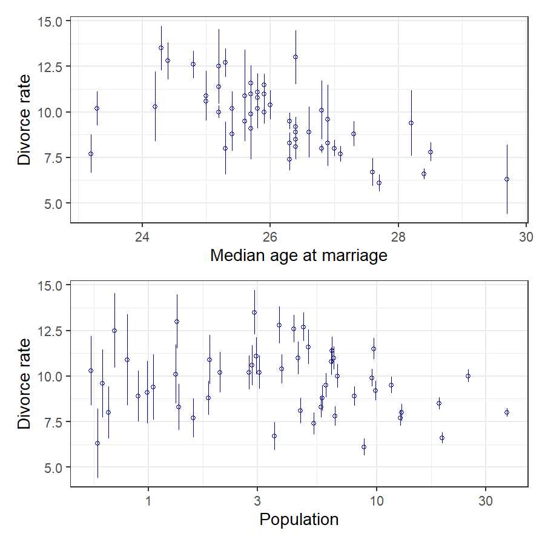
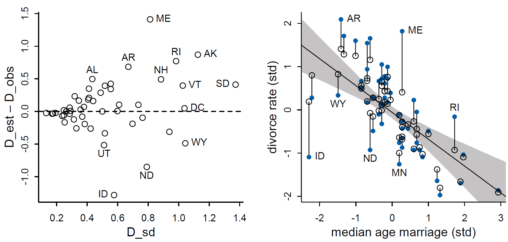
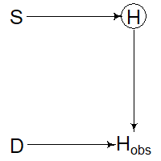

Working with Messy Data
EES 5891-03
Bayesian Statistical Methods
Jonathan Gilligan
Class #21: Thursday, November 10 2022
Working with Uncertain Data
Uncertain Data
- Divorce-rate data has uncertainties
- Uncertainties in marriage and divorce rates are different in different states
- States with larger populations have larger samples
p1 <- ggplot(d, aes(x = MedianAgeMarriage, y = Divorce,
ymin = Divorce - Divorce.SE,
ymax = Divorce + Divorce.SE)) +
geom_pointrange(shape = 1, color = "darkblue") +
labs(x = "Median age at marriage", y = "Divorce rate")
p2 <- ggplot(d, aes(x = Population, y = Divorce,
ymin = Divorce - Divorce.SE,
ymax = Divorce + Divorce.SE)) +
geom_pointrange(shape = 1, color = "darkblue") +
scale_x_log10() +
labs(x = "Population", y = "Divorce rate")
p1 / p2
Modeling Uncertain Data
-
Generative thinking:
- Bayesian models simulate the processes that produce the data.
- This can include the processes that create uncertainty in measurements.
-
Modeling uncertainty
\[ \begin{align} D_{\text{obs}} &\sim \text{Normal}(D_{\text{True}}, \sigma_D) \\ D_{\text{True}} &\sim \text{Normal}(\mu, \sigma) \\ \mu &= \alpha + \beta_A \, A + \beta_M \, M \end{align} \]
mdl_divorce <- ulam(
alist(
D_obs ~ dnorm(D_true, sigma_D),
vector[N]:D_true ~ dnorm(mu, sigma),
mu <- a + bA * A + bM * M,
a ~ dnorm(0, 0.2),
bA ~ dnorm(0, 0.5),
bM ~ dnorm(0, 0.5),
sigma ~ dexp(1)
), data = d_list, chains = 4, cores = 4)## mean sd 5.5% 94.5% n_eff Rhat4
## D_true[1] 1.17 0.37 0.59 1.76 1752 1
## D_true[2] 0.69 0.56 -0.21 1.59 1848 1
## D_true[3] 0.42 0.34 -0.13 0.96 2347 1
## ...
## mean sd 5.5% 94.5% n_eff Rhat4
## D_true[49] -0.64 0.29 -1.11 -0.17 2306 1
## D_true[50] 0.86 0.57 -0.05 1.77 1758 1
## a -0.05 0.10 -0.20 0.10 1671 1
## bA -0.61 0.17 -0.87 -0.35 1501 1
## bM 0.06 0.17 -0.22 0.33 1193 1
## sigma 0.59 0.11 0.43 0.77 550 1Shrinkage

Uncertainty in Predictor and Outcome
Uncertainty in Predictor and Outcome
- There is also uncertainty in the marriage rate
-
New DAG:
\[ \begin{align} D_{\text{obs}} &\sim \text{Normal}(D_{\text{True}}, \sigma_D) \\ D_{\text{True}} &\sim \text{Normal}(\mu, \sigma) \\ \mu &= \alpha + \beta_A \, A + \beta_M \, M_{\text{True}} \\ M_{\text{obs}} &\sim \text{Normal}(M_{\text{True}}, \sigma_M) \\ M_{\text{True}} &\sim \text{Normal}(0,1) \end{align} \]
-
d_list_2 <- list(
D_obs = standardize(d$Divorce),
sigma_D = d$Divorce.SE / sd(d$Divorce),
M_obs = standardize(d$Marriage),
sigma_M = d$Marriage.SE / sd(d$Marriage),
A = standardize(d$MedianAgeMarriage),
N = nrow(d)
)mdl_divorce_2 <- ulam(
alist(
D_obs ~ dnorm(D_true, sigma_D),
vector[N]:D_true ~ dnorm(mu, sigma),
mu <- a + bA * A + bM * M_true[i],
M_obs ~ dnorm(M_true, sigma_M),
vector[N]:M_true ~ dnorm(0, 1),
a ~ dnorm(0, 0.2),
bA ~ dnorm(0, 0.5),
bM ~ dnorm(0, 0.5),
sigma ~ dexp(1)
), data = d_list_2, chains = 4, cores = 4)## mean sd 5.5% 94.5% n_eff Rhat4
## a -0.04 0.09 -0.19 0.11 1695 1
## bA -0.55 0.16 -0.81 -0.29 1090 1
## bM 0.18 0.21 -0.14 0.53 844 1
## sigma 0.57 0.11 0.39 0.75 794 1Shrinkage in Two Variables
post <- extract.samples(mdl_divorce_2)
D_true <- apply(post$D_true, 2, mean)
M_true <- apply(post$M_true, 2, mean)
plot(d_list_2$M_obs, d_list_2$D_obs, pch=16, col=rangi2,
xlab="marriage rate (std)", ylab="divorce rate (std)")
points(M_true, D_true)
for (i in 1:nrow(d))
lines(c(d_list_2$M_obs[i], M_true[i]),
c(d_list_2$D_obs[i], D_true[i]))Complications
These analyses were simple because there were no complications to the DAGs, such as colliders
-
Things get a lot more complicated if there are correlations in the errors,
-
or if the errors depend on the values of variables
-
Another problem arises if a non-causal variable has less error than a causal one:
- It will look like M is influencing D and A is not.
Missing Data
Missing Data
- What do you do if some measurements are mising?
- Complete Case Analysis
- Only analyze cases (rows in your data frame) where all the variables were measured
- Imputation
- Estimate the value of missing variables, and use the estimates in your analysis
- Complete Case Analysis
- Complete case analysis:
- At best, it’s inefficient.
- You’re not using all the data you have)
- At worst, it introduces bias into your analysis
- At best, it’s inefficient.
- Kinds of missingness:
- Missing completely at random (MCAR)
- Some measurements are missing for reasons that have nothing to do with what you’re studying.
- Missingness does not depend or correlate with any variables in your study
- Missing at random (MAR)
- Measurements of some variable are missing randomly, with a probability that depends on the value of a predictor variable that is not missing.
- Measurements are missing randomly, with a probability that depends on the value of an unobserved variable.
- Missing not at random (MNAR)
- Missingness depends on the value of the missing variable.
- Missing completely at random (MCAR)
Examples: The Dog Eats the Homework
- We’re investigating how the amount a student studies affects their homework grade
- Students have dogs
- Sometimes the dogs eat the students’ homework before they can turn it in.
- Variables:
- S is the amount of studying (standardized)
- \(H\) is the homework score (0–10)
- \(D\) is a dog: 0,1 indicates whether it ate the homework
- \(H_{\text{obs}}\) is score for
homework that’s turned in, or
NAif it’s missing
- Missing completely at random (MCAR):
-
The dog just randomly eats homework on some days.

-
- Missing at random (MAR)
The more a student studies, the less they play with the dog.
-
Bored dogs are more likely to eat homework
Examples: The Dog Eats the Homework
- Missing at random (MAR):
Unobserved variable
Some days, it’s noisy at home
The noise annoys the dog and it’s more likely to eat homework
-
The noise also distracts the student and affects the quality of the homework
- Missing not at random (MNAR)
-
Dogs prefer to eat homework with low scores
-
Case-Study: Primates
Primates
- Prediuct nutritional content of milk in different primate species from the species’ average body mass and the size of the neocortex as a percentage of total brain mass.
- In Chapter 5, we discovered that the brain measurements were missing for many species
| clade | species | kcal.per.g | perc.fat | perc.protein | perc.lactose | mass | neocortex.perc |
|---|---|---|---|---|---|---|---|
| Strepsirrhine | Eulemur fulvus | 0.49 | 16.60 | 15.42 | 67.98 | 1.95 | 55.16 |
| Strepsirrhine | E macaco | 0.51 | 19.27 | 16.91 | 63.82 | 2.09 | NA |
| Strepsirrhine | E mongoz | 0.46 | 14.11 | 16.85 | 69.04 | 2.51 | NA |
| Strepsirrhine | E rubriventer | 0.48 | 14.91 | 13.18 | 71.91 | 1.62 | NA |
| Strepsirrhine | Lemur catta | 0.60 | 27.28 | 19.50 | 53.22 | 2.19 | NA |
| New World Monkey | Alouatta seniculus | 0.47 | 21.22 | 23.58 | 55.20 | 5.25 | 64.54 |
| New World Monkey | A palliata | 0.56 | 29.66 | 23.46 | 46.88 | 5.37 | 64.54 |
| New World Monkey | Cebus apella | 0.89 | 53.41 | 15.80 | 30.79 | 2.51 | 67.64 |
| New World Monkey | Saimiri boliviensis | 0.91 | 46.08 | 23.34 | 30.58 | 0.71 | NA |
| New World Monkey | S sciureus | 0.92 | 50.58 | 22.33 | 27.09 | 0.68 | 68.85 |
Statistical models
-
Basic model (Chapter 5)
-
Now model the process that causes brain data to be missing.
-
Completely at random
-
-
At random
-
Not at random
Working with Missing Data
- Missing completely at random (MCAR):
- No bias from using complete cases,
- but we lose good data from variables that were measured
- No bias from using complete cases,
- Missing at random (MAR):
-
There is potential bias from a non-causal path
\[ B_{\text{obs}} \leftarrow R_B \leftarrow M \rightarrow K\]
but conditioning on \(M\) closes this backdoor.
-
Our model conditions on \(M\) anyway, so we can use complete cases,
- but we lose data if we do so.
-
- Missing not at random (MNAR):
- Missingness depends on brain size.
- This could happen because scientists are more interested in species with large brains.
- This would create a backdoor (non-causal path) through \(R_B\) that will be impossible to test for or solve with conditioning.
Imputation
Imputation
- Use Bayesian methods to impute values for missing measurements
- Each missing value becomes a parameter in our model.
- Start with a prior
- Relate good measurements to missing ones
- We end up with a posterior probability distribuiton for each missing value
\[ \begin{align} K &\sim \text{Normal}(\mu, \sigma) \\ \mu &\sim \alpha + \beta_B \, B + \beta_M \, \log M \\ B &\sim \text{Normal}(\nu, \sigma_B) \\ \alpha &\sim \text{Normal}(0, 0.5) \\ \beta_B &\sim \text{Normal}(0, 0.5) \\ \beta_M &\sim \text{Normal}(0, 0.5) \\ \sigma &\sim \text{Exponential}(1) \\ \nu &\sim \text{Normal}(0.5, 1) \\ \sigma_B &\sim \text{Exponential}(1) \end{align} \]
Turning our model into code
\[ \begin{align} K &\sim \text{Normal}(\mu, \sigma) \\ \mu &\sim \alpha + \beta_B \, B + \beta_M \, \log M \\ B &\sim \text{Normal}(\nu, \sigma_B) \\ \alpha &\sim \text{Normal}(0, 0.5) \\ \beta_B &\sim \text{Normal}(0, 0.5) \\ \beta_M &\sim \text{Normal}(0, 0.5) \\ \sigma &\sim \text{Exponential}(1) \\ \nu &\sim \text{Normal}(0.5, 1) \\ \sigma_B &\sim \text{Exponential}(1) \end{align} \]
Model output
## mean sd 5.5% 94.5% n_eff Rhat4
## nu -0.05 0.22 -0.41 0.29 1836 1
## a 0.03 0.16 -0.23 0.28 2099 1
## bM -0.53 0.20 -0.85 -0.20 1406 1
## bB 0.48 0.24 0.08 0.85 1068 1
## sigma_B 1.02 0.17 0.78 1.32 1342 1
## sigma 0.85 0.15 0.64 1.10 1436 1
## B_impute[1] -0.56 0.91 -1.96 0.92 2022 1
## B_impute[2] -0.69 0.96 -2.18 0.79 2471 1
## B_impute[3] -0.70 0.93 -2.13 0.80 1914 1
## B_impute[4] -0.30 0.89 -1.76 1.11 2546 1
## B_impute[5] 0.46 0.93 -1.03 1.94 2831 1
## B_impute[6] -0.15 0.91 -1.51 1.30 2604 1
## B_impute[7] 0.17 0.92 -1.23 1.62 2854 1
## B_impute[8] 0.28 0.91 -1.17 1.71 2883 1
## B_impute[9] 0.52 0.95 -0.99 1.97 2643 1
## B_impute[10] -0.43 0.94 -1.89 1.06 1906 1
## B_impute[11] -0.29 0.90 -1.70 1.16 2947 1
## B_impute[12] 0.12 0.90 -1.31 1.55 2421 1Examining the model
- Run the model again without the missing data (complete cases):
## mean sd 5.5% 94.5% n_eff Rhat4
## nu 0.00 0.23 -0.35 0.37 1860 1
## a 0.10 0.20 -0.23 0.42 1389 1
## bM -0.64 0.25 -1.03 -0.22 1101 1
## bB 0.60 0.28 0.13 1.02 1056 1
## sigma_B 1.04 0.19 0.78 1.38 1889 1
## sigma 0.88 0.20 0.63 1.25 1109 1Examine the posterior
Improve the model
-
In our model, \(B\) and \(M\) are related through \(U\).
Instead of our original imputation formula \[B \sim \text{Normal}(\nu, \sigma_B),\] use \[(M, B) \sim \text{MVNormal}((\mu_M, \mu_B), S),\] where \(S\) is a covariance matrix.
mdl_milk_3 <- ulam(
alist(
# K as function of B and M
K ~ dnorm(mu, sigma),
mu <- a + bB * B_merge + bM * M,
# M and B correlation
MB ~ multi_normal(c(muM, muB), Rho_BM, Sigma_BM),
matrix[29,2]:MB <<- append_col(M, B_merge),
# define B_merge as mix of observed and imputed values
vector[29]:B_merge <- merge_missing(B, B_impute),
# priors
c(a, muB, muM) ~ dnorm(0, 0.5),
c(bB, bM) ~ dnorm(0, 0.5),
sigma ~ dexp(1),
Rho_BM ~ lkj_corr(2),
Sigma_BM ~ dexp(1)
), data = dat_list, chains = 4, cores = 4)## mean sd 5.5% 94.5% n_eff Rhat4
## bM -0.65 0.22 -0.99 -0.31 877 1
## bB 0.59 0.26 0.15 0.98 961 1
## Rho_BM[1,1] 1.00 0.00 1.00 1.00 NaN NaN
## Rho_BM[1,2] 0.61 0.13 0.37 0.79 1423 1
## Rho_BM[2,1] 0.61 0.13 0.37 0.79 1423 1
## Rho_BM[2,2] 1.00 0.00 1.00 1.00 NaN NaNExamine the posterior